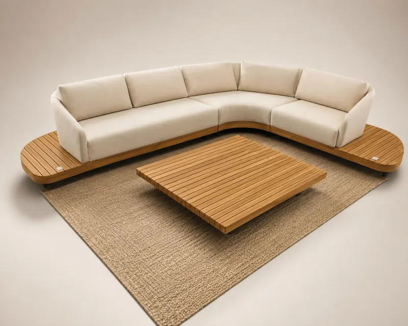
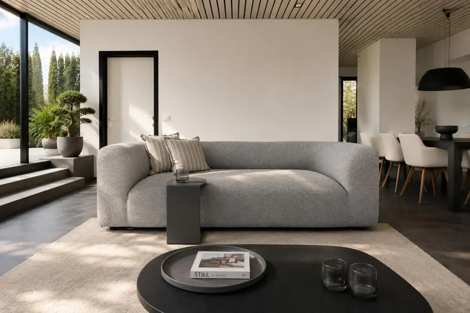
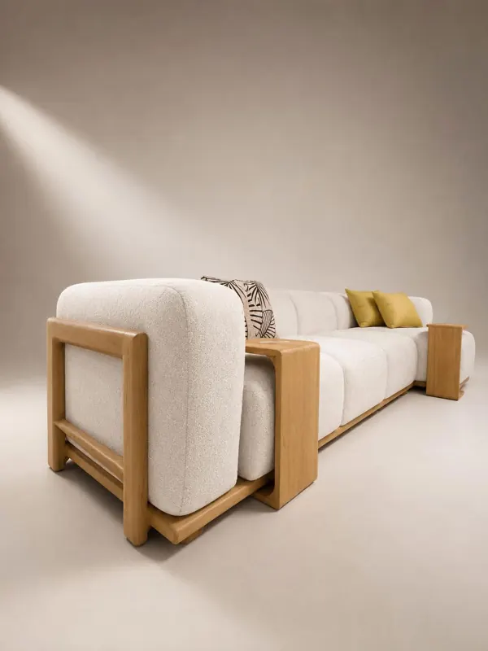

Binnenmeubelen
Dezelfde lijnen, binnen. Stukken die van de woonkamer naar het terras gaan zonder iets van hun uitstraling te verliezen: dat is hybride meubilair.







Dezelfde lijnen, binnen. Stukken die van de woonkamer naar het terras gaan zonder iets van hun uitstraling te verliezen: dat is hybride meubilair.


